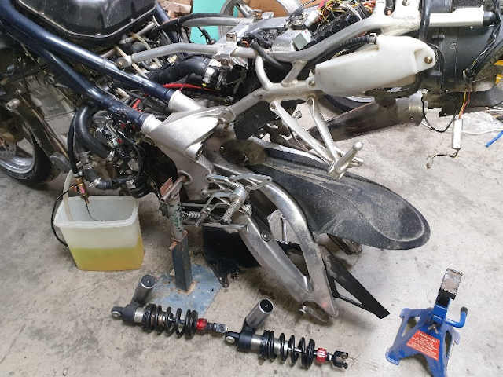
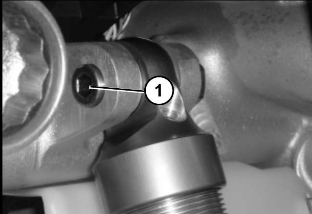
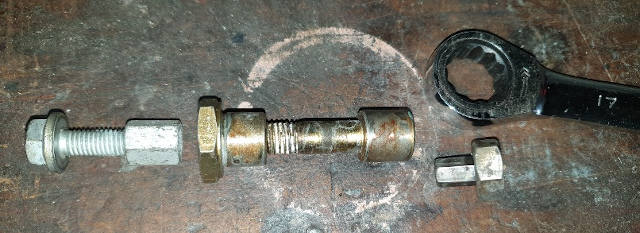
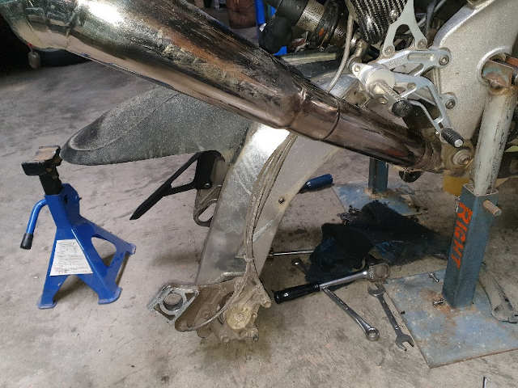
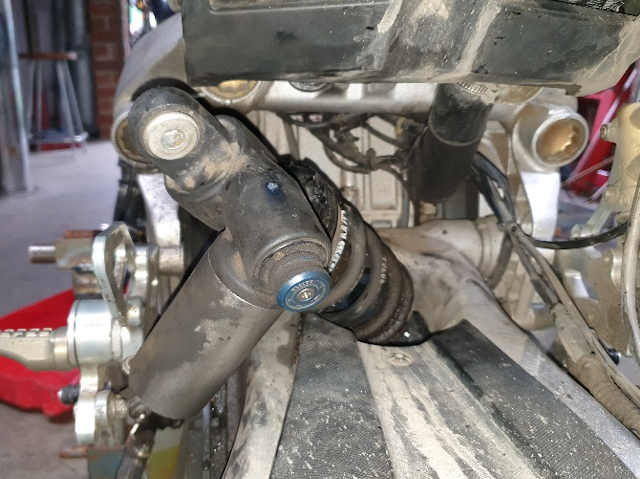
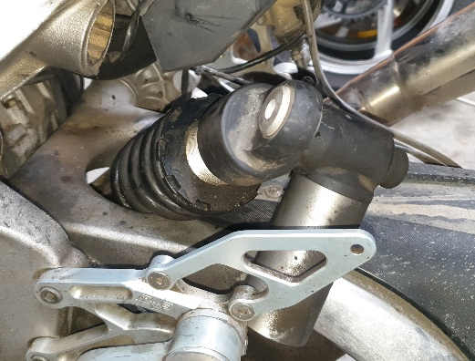
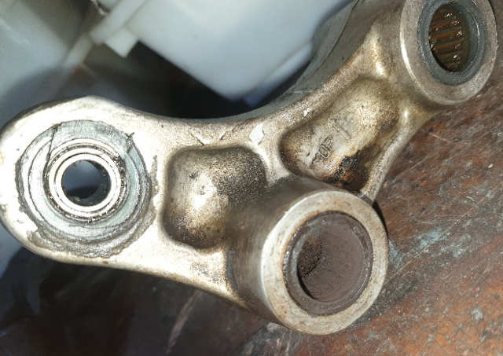
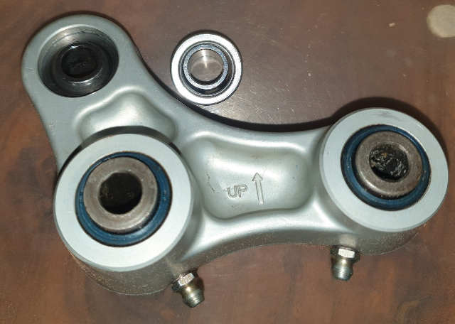
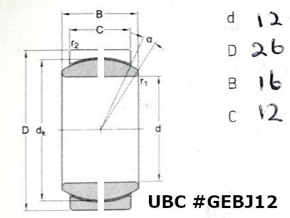

Rear Shock
(updated 03 May 2023)
First of all, the removal and installation procedure in the manual is for the Tornado LE, not the Tornado or RS.
Follow the procedure in the TNT1130 manual from section 7.7.2
To remove the shock you need to:
- Support the rear. I use the swingarm pivot and a couple of modified car stands - for the extra height.
- Then remove :-
- the tank
- all of the front panels (to make access easier)
- the radiator ducts (ditto)
- the left hose from the radiator (to gain access to the top bolt)
- the wheel
- the brake caliper (so that the hoses & cables don't restrict the swingarm movement)
- all three shock linkage bolts, dog bones & the linkage itself
- Support the swingarm or it will drop when those bolts are removed.

Then you need to undo the top bolt. '1' in the TNT pic below. (The Tornado shock will have a gas chamber at the top.)

To do that you'll need a 22 mm open end or ring spanner to hold the nut at the rhs, and an 8 mm Allen key to fit the
cap bolt. It'll be tight. I used a 400 mm long water pipe over the Allen key - you will need a decent key ;)
The space is restricted, so I made up a short 8/17 mm hex adapter, and a 17 mm ratchet wrench to drive it, once the thread was
unlocked.
The nut will be driven out & the bolt will stay in place, so you need to hold the nut to force the bolt out. I used an 8 mm
hex bolt and long nut between the frame and the 22 mm nut. It's a bit of a fiddle.

With the caliper & cables free, lower the swingarm as far as it will go.

Now comes the magic. The shock has to be in just the right position to clear the radiator shroud. The next two pics show what
worked (just) for me.

It helps if the spring coils are strategically placed, but that's more luck than good management.

Now to inspect the linkage. Clearly mine is stuffed, after 144,000 kms and only one greasing at 89,000.
The manual doesn't mention the linkage bearings in the maintenance schedule. Only the shock - check/adjusted every 6000 km.
What you see is the result.
You won't see the bottom shock bearing setup you see below. I added that at 89,000 km when I discovered the swingarm had a lot
of vertical play in it. The spherical bearing had failed and worn the linkage. I used 4 ball cages held in a nylon bush, expecting
it to last to the next service. It lasted 54,000, They look ok, but they are partially seized.

What you see below came from Buster's Tornado,
stolen in Nov 2009
and retrieved from the thief's back yard in Canberra 10 years later. Now mine.

I've added 2 grease nipples and will add the third, to allow easy lubrication every service. Not sure if the seals will pop out under
grease pressure, so we'll see what happens.
The linkage is alloy so the nipples chosen have the lowest TPI I could find for a thread of roughly that size - 1/4 BSW. It will grip harder than
higher TPI threads. One downside of BSW is the 55 degree angle. A 1/4 UNC tap is the same pitch and readily available, but it's 60 degree angle
will not seal as well when mated to a 55 degree one. Fortunately I have a 1/4 BSW tap set. Lucky me.
Spherical Bearing
At 13,000 km, when the bike was stolen, the spherical bearing was already marked. That bearing is a steel/steel + PTFE "maintenance free" type.
The PTFE is edged in 1 mm wide steel, which has damaged the ball. My plan is to replace it with a steel/steel, maintainable spherical bearing
(UBC - Chinese but quality, I'm assured - p/n GEBJ12) . The dimensions follow.

Needle Roller Bearings
The 4 needle rollers are p/n HK1816, 18x24x16.
The 4 seals are 18x24x4. Surprisingly, after 144,000 km and 20 years, they are still fine. They don't have to do much though as there is barely any
rotational movement to wear them out. Not proof against water though.
The inner bearing races, called "spacers" in the Benelli parts catalogue are p/n R21214751A, for the frame connection, and R21214761A, for the
dog-bones connection. These are not a standard part and must either be purchased from a Benelli dealer or created new by a machine shop. Both are 17.99 mm od,
and 10.1 mm ID. The lengths are 56.0 & 68.0 (+/- 0.1) respectively. The OD must be ground & hardened to needle roller bearing specifications.
Amazingly, the frame "spacer" is in remarkably good condition after 20 years of use. It is pitted on one side from constant needle roller pressure and
would need replacing if the spare linkage was not available. Obviously, the dog-bone "spacer" is rusted into oblivion.
The circular bearing is sealed using two o-rings 21.89 x 2.62 mm (#568-118)
Installation
After regreasing the linkage bearings ensuring that the greasing system is working, the installation procedure of the shock is the reverse of the
removal.
Comment
Before the two needle bearing bolts were torqued to 45 Nm, there was just under 3 mm of play at the axle. This is due to the poor matching of bolt
diameter (9.85 - 9.9 mm) and the inner race bore (10.3 mm). This could be reduce to under 1 mm if 2 special 10.2 mm bolts were installed. When the
oem bolts are tightened, the play reduced to near zero, but any slight loosening of these bolts will result in it's return. They should be checked
every major service.